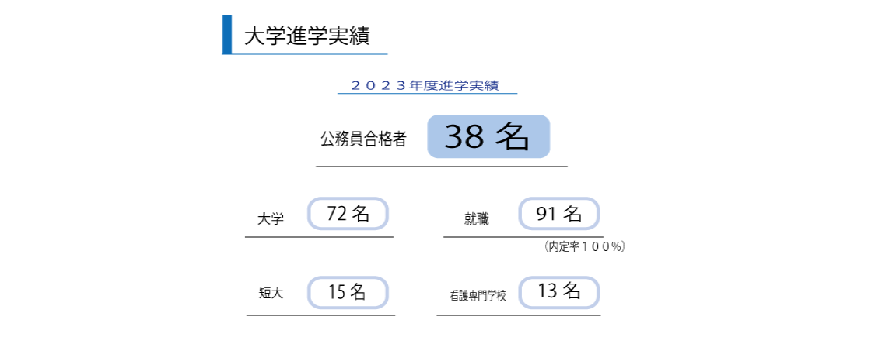

就職内定率現在１００％
２０２３年度において、進学は90％の合格率、そして就職に関しては内定、１００％を達成しました。非常に素晴らしい結果であり、学生たちにとって安心感と将来への展望を提供しています。
札幌東商業高校 校歌
１ 春風去りて 静寂けき原始林に
清新の魂 集う学舎
心理の道程を ともに励めば
明日を築く 誓いはかたし
おお 学友よ
拓きてゆかん 学びの道
２ みどりふかく こかげさやか
清き瞳に 歓喜わかち
永久に讃えん 平和の国を
栄えあれ！ ああ
３ 生命充つる ますみの空
つなぐ腕に 力を込めて
永久に讃わん 自由の詩を
光あれ！ ああ
４ 風雪しげき 東の大地に
覇気の象徴と 建てる学舎
青春の理想 ともに語れば
世紀を開く 意気なおたかし
おお 学友よ
究めゆかん 学びの道
アクセス
地下鉄新さっぽろ駅下車
出口６・８番 徒歩１０分
ＪＲ新札幌駅下車 徒歩 ８分
ＪＲ厚別駅下車 徒歩１２分
ＪＲバス東商業前下車 徒歩 ３分
夕鉄バス東商業前下車 徒歩 ３分
施設（主要施設）
１F
会計セミナー室

会計実習室
売店
多目的室
格技場
２F
作道室
パソコン室
被服教室
調理室
３F
商業ホール
文書処理室
図書室
LL教室
４F
音楽室
語学実践室
総合実践室